<ion-fab>
<lib-ionic-pullup (onExpand)="footerExpanded()" (onCollapse)="footerCollapsed()" [(state)]="footerState">

<ion-toolbar id="ionDragFooter" (click)="toggleFooter()" #ionDragFooter>
  <ion-title><ion-button id="pullup-bar"></ion-button></ion-title>
</ion-toolbar>

<ion-content>
    <ion-content>
      <ion-list>
        <ion-button expand="block" (click)="presentBusModal()">
          <ion-icon name="time"></ion-icon>
          Shuttle Schedule
        </ion-button>
        <ion-button expand="block" (click)="presentAppSettingsModal()">
          <ion-icon name="settings"></ion-icon>
          App Settings
        </ion-button>
      </ion-list>
      <!-- FAVORITES -->
      <ion-card>
        <ion-card-header>
          <ion-card-title>Favorites</ion-card-title>
        </ion-card-header>
        <ion-card-content>
          <ion-grid>
            <ion-row>
              <ion-col>
                <ion-button>SOEN-390</ion-button>
              </ion-col>
              <ion-col>
                <ion-button>SOEN-344</ion-button>
              </ion-col>
              <ion-col>
                <ion-button>COMP-335</ion-button>
              </ion-col>
            </ion-row>
          </ion-grid>
        </ion-card-content>
      </ion-card>

      <!-- NEAR ME -->

      <ion-item>
        <ion-label>Near me</ion-label>
        <ion-input></ion-input>
      </ion-item>
      <ion-card>
        <ion-card-content style="text-align:center;">
          <div class="near-me-icon-container">
            <ion-fab-button (click)="showNearMe('restaurant')" color="secondary" class="near-me-icon">
              
            </ion-fab-button>
            <div class="near-me-label">Restaurants</div>
          </div>
          <div class="near-me-icon-container">
            <ion-fab-button (click)="showNearMe('bank')" color="secondary" class="near-me-icon">
              
            </ion-fab-button>
            <div class="near-me-label">Banks</div>
          </div>
          <div class="near-me-icon-container">
            <ion-fab-button (click)="showNearMe('bar')" color="secondary" class="near-me-icon">
              
            </ion-fab-button>
            <div class="near-me-label">Bars</div>
          </div>
          <div class="near-me-icon-container">
            <ion-fab-button (click)="showNearMe('park')" color="secondary" class="near-me-icon">
              
            </ion-fab-button>
            <div class="near-me-label">Parks</div>
          </div>
        </ion-card-content>
      </ion-card>

      <!-- RECENT EXAMPLE -->

      <ion-item>
        <ion-label>Recent</ion-label>
        <ion-input></ion-input>
      </ion-item>
      <ion-card>
        <ion-card-header>

          <ion-card-title>H building 534 <div class="ion-text-end">2 min</div>
          </ion-card-title>
          <ion-card-subtitle>Sir George Williams Campus</ion-card-subtitle>
        </ion-card-header>

      </ion-card>

    </ion-content>
  </ion-content>

</lib-ionic-pullup>
</ion-fab>
